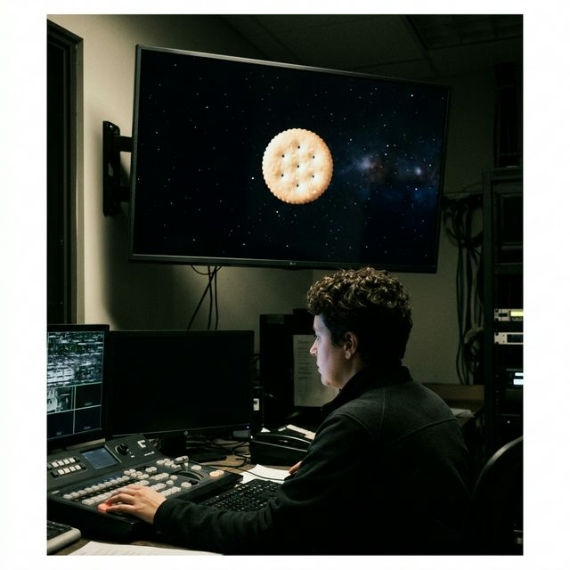
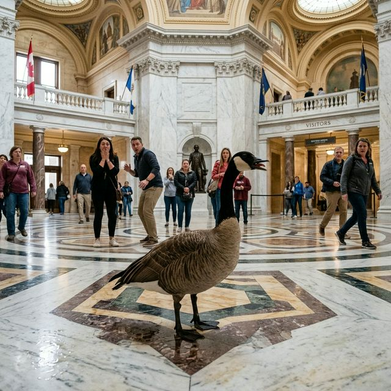

NASA Confirms: The Moon is Just a Stale Ritz Cracker
Decades of conspiracy theories validated by the James Webb Space Telescope's recent crumbs analysis. We demanded cheese, we got salt.
"Loud, Proud, and Deeply Fried."

The bipartisan waterfowl is expected to honk aggressively during the next fiscal quarter, sparking fears of a potential "beak-down" in negotiations.
WASHINGTON D.C. — In a stunning 3am vote, the House of Representatives has officially abandoned the statutory debt limit in favor of releasing a 40-pound Canada Goose into the Capitol rotunda, insisting that dealing with raw, untempered avian rage is preferable to speaking with members across the aisle.
Read Full Story
Decades of conspiracy theories validated by the James Webb Space Telescope's recent crumbs analysis. We demanded cheese, we got salt.
7-2 decision protects fundamental rights of "that one guy at the park." Justice Alito notes, "The pigeons know what they did."
Officials remind residents that prolonged staring into the void without a permit will result in a $500 daily fine and a mandatory town hall meeting.
Read BriefA leaked cache of documents confirms that the eastern seaboard relies entirely on "Gary from Accounts Receivable aggressively trying to close his Apple Watch rings."